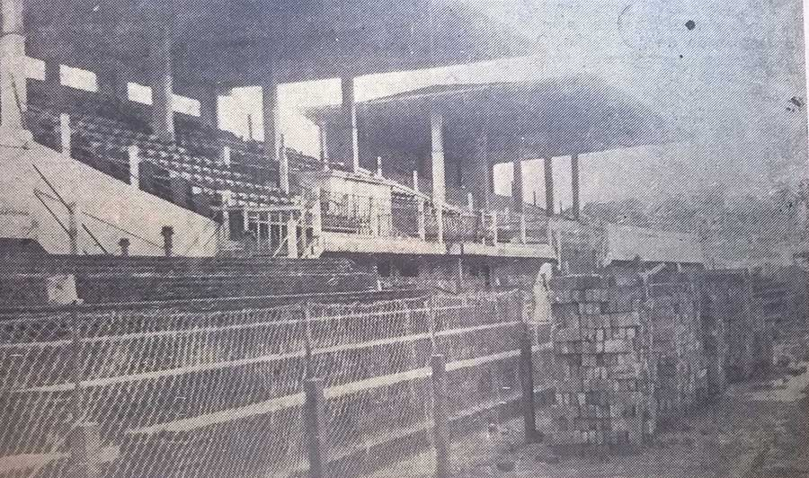

Estádio Alameda
Por Ives Teixeira Souza
Entre as Alamedas: o percurso do complexo esportivo do América Futebol Clube
Poeira acima dos 20 centímetros. Terra. Milhares de pessoas. A combinação entre obra inacabada e a empolgação dos torcedores fez daquele dia 9 de setembro um marco histórico para o futebol de Belo Horizonte.
O ano era 1928 e a cidade inaugurava o seu maior e mais moderno estádio, o novo complexo esportivo do América Futebol Clube. Localizado no bairro Santa Efigênia, o estádio da Avenida Araguaia (hoje Francisco Sales), ficava entre as atuais ruas Alameda Ezequiel Dias e a Alameda Álvaro Celso (Ver mapa). O excesso de alamedas ao redor originou o nome pelo qual o estádio ficou conhecido: Alameda.
Em uma cidade marcada pela prática esportiva desde o seu planejamento inicial, com a criação do Parque Municipal, a popularidade do futebol foi tomando as calçadas e os quarteirões vazios da cidade. Na década de 1910, o grande número de equipes permitiu a criação de associações reguladoras do esporte e campeonatos entre os times da cidade, como a Taça Bueno Brandão, em 1914. Dos campos de várzea a ser dono do primeiro estádio da capital, inaugurado em 1922, o América construía a sua história como o principal clube esportivo de Belo Horizonte.
As emoções do primeiro jogo
Naquela tarde de domingo, Belo Horizonte se reuniu para assistir ao jogo, que muitos anos depois foi denominado “o clássico das multidões”: América x Atlético. Diante da nuvem de poeira que impedia a todos de ver o gramado, não se via a bola, muito menos o juiz.
Mas não seria possível vê-lo, já que o escalado para apitar a partida não compareceu. Diante da procura dos dirigentes dos clubes por alguém que pudesse apitar o primeiro jogo do Alameda, segundo a Enciclopédia do América, o desafio coube à Oscarlino Paixão, torcedor do Sete de Setembro, um dos outros clubes da cidade.
Com a coragem de apitar um clássico sem alambrado, com a torcida praticamente dentro do gramado, Paixão realizou uma arbitragem confusa no primeiro tempo. A torcida vaiava o árbitro constantemente, sendo tão grande o descontentamento que alguns torcedores tentaram agredi-lo ao fim do primeiro tempo. A confusão só não foi pior por causa da ação da polícia, que, inclusive, chegou a prender um guarda, que também tentava fazer a segurança da partida.
Alegando falta de segurança diante daquela multidão em fúria, Oscarlino recusou-se a voltar para apitar o segundo tempo. Como os clubes não encontraram ninguém para substituí-lo, o árbitro fez o sacrifício de continuar a partida. Mas continuou não sendo poupado pelos torcedores diante de uma fraca arbitragem. Sortudo foi Euclydes Dias, o árbitro que tinha sido escalado, que não colocou os pés no Alameda.
Ao fim daquela tarde calorosa ao lado do Parque Municipal, o Atlético venceu a equipe americana por 1 x 0. Era o primeiro clássico entre as duas equipes no novo palco do esporte belo-horizontino.
O acordo para o novo estádio
No ano anterior, 1927, a prefeitura comandada por Cristiano Machado havia feito um acordo com o América. A área do antigo estádio do clube seria desapropriada para a ampliação do Mercado Central da cidade. Em troca, a prefeitura construiria o novo estádio para o clube. O Atlético Mineiro, equipe esportiva que rivalizava com o América no número de torcedores, também recebeu uma proposta semelhante. Belo Horizonte, naquele momento, era uma cidade em expansão, ampliando a ocupação de seus espaços para o desenvolvimento da capital. Mesmo que para isso fosse necessário utilizar muito dinheiro público.
No acordo assinado com o América, o governo municipal se comprometeu a fazer, além do campo gramado para a prática de futebol, toda a área para a prática de esportes. Já que no antigo terreno o clube tinha a maior praça de esportes da cidade. Não se tem informações sobre os valores gastos para a desapropriação do espaço do antigo estádio, mas o Relatório de Prefeitos (1927-1928) confirma a execução por empreitadas, com o acompanhamento da diretoria de obras da Prefeitura. Como consta no documento, assinado pelo prefeito Cristiano Machado em outubro de 1928, “o campo está concluído, bem como três grandes archibancadas em cimento armado e vários outros serviços complementares que dão ao conjunto um aspecto de certa imponência. Estão sendo agora preparados os campos para os jogos de tennis and basketball”.
“Havia a piscina, com profundidade de mais de 7 metros, porque havia o trampolim de salto. E também as duas quadras, onde se jogava basquete, além da quadra de tênis”, rememora Afonso Celso Raso, presidente de honra do América, que frequentou o clube desde o início dos anos 1940, sobre a praça de esportes. Em entrevista exclusiva para esta reportagem, Afonsinho conta que uma crítica que se fazia ao América era misturar a sede social com a presença dos jogadores de futebol profissional. “Debaixo de um lado da arquibancada funcionava o alojamento dos jogadores. Do outro lado, o salão do Conselho Deliberativo, a secretaria”.
A urbanização de Belo Horizonte
Naquele anos finais da década de 1920, a cidade passava por intensa transformação urbana. Na região próxima ao Ribeirão e à Avenida do Contorno foi realizada a obra de canalização do córrego, algo importante para o desenvolvimento daquela região da cidade. Mostrando que a construção da nova praça de esportes na região fazia parte de um projeto mais amplo. Entre outras obras realizadas naquela área estava construção de duas pontes de concreto sobre o Arrudas, fazendo uma nova ligação entre o bairro Floresta e a Avenida Araguaya. A proximidade da área do terreno com o Parque Municipal indica o desejo de se construir um espaço, diante de uma nova vida urbana, “que tanto realce poderá dar à educação physica da mocidade”, realça o relatório da gestão de Machado.
A rivalidade que lota o estádio
Se o estádio não estava em condições de receber os jogadores, imprensa e mais de 12 mil torcedores (apesar das arquibancadas terem capacidade para cinco mil pessoas), as condições vinte anos depois também não eram as melhores. Depois de uma fase ruim no futebol nos anos 1930, quando deixou de disputar campeonatos profissionalmente, o América tentava recuperar o seu prestígio no cenário futebolístico da cidade - o clube é o único a vencer o campeonato mineiro dez vezes seguidas, entre 1915 e 1925.
Enquanto o complexo esportivo do Alameda era utilizado para a prática de outros esporte, como o basquete, o presidente do clube, Alair Couto, deu início ao processo de remodelação do estádio, com o apoio da torcida americana. De acordo com a Revista do América, editada pelo jornalista Januário Carneiro, o estádio teria a capacidade ampliada para 15 mil torcedores. “A reforma de 1948 foi só no campo de futebol. Antes, eram três arquibancadas que foram emendadas”, relembra Afonso Raso.

O motivo para a antiga divisão da arquibancada, como conta o pesquisador sobre a história dos estádios de Belo Horizonte e professor da Unimontes, Georgino Neto, seria a rivalidade entre os principais clubes da cidade. “A do centro, era reservada ao América; a da esquerda, destinada aos palestrinos; e a da direita, dedicada aos torcedores atleticanos”. A mesma rivalidade que fez com que o América adiantasse a inauguração do estádio, em 1928, mesmo sem a estrutura estar totalmente construída. “O estádio do rival atleticano estava em fase bastante adiantada no final daquele ano, com a sua inauguração prevista para o início do próximo ano. A rivalidade futebolística talvez tenha promovido a imperiosa necessidade de sair à frente do clube opositor, ainda que em condições não adequadas”, explica o professor.
O número de torcedores era tão expressivo naquele jogo, que a torcida, em cerca de 12 mil pessoas, superou a capacidade limitada do estádio, que era de 10 mil pessoas. As cadeiras de marmorite estavam longe de ser suficientes. A solução foi sentar a poucos centímetros da linha lateral do gramado, esbarrando nos jogadores dentro do gramado.
A grande reforma de 1948
“Entre a arquibancada e o campo havia 5 mil cadeiras de marmorite, que o Alair Couto vendeu para arrecadar dinheiro para a obra. Mas ele também fazia muita campanha: a do cimento, a do tijolo, a da cadeira. O dinheiro foi sendo arrumando aos poucos”, continua Raso.

Ainda em 1948, o prefeito Otacílio Negrão de Lima - torcedor americano, de acordo com a Enciclopédia do clube - financiou os principais clubes de Belo Horizonte com um empréstimo da prefeitura para a valorização da prática esportiva no município. Com o dinheiro, o América conclui a reforma do estádio, que foi inaugurado ainda naquele ano, em “um salto de excepcional envergadura”, como escrito na Revista do América.
O americano ilustre, que passou a nomear o reformulado estádio, Estádio Otacílio Negrão de Lima, esteve presente na reinauguração do estádio, dando o pontapé inicial no segundo jogo da tarde. Após as homenagens oferecidas pelos clubes da capital a ele. Recebendo as bênçãos do arcebispo de Mariana, Dom Helvécio Gomes, o estádio foi inaugurado com grande festa. Com renda de 304 mil cruzeiros, recorde de renda para uma partida disputada na capital mineira.
A apoteótica reinauguração naquele 27 de maio, como descreveram os jornais, contou também com a presença do governador de Minas Gerais, o alamedino Milton Campos, do secretário de Interior e também torcedor do clube, Pedro Aleixo, e do secretário de Finanças, Magalhães Pinto.
A festividade contou com um quadrangular formado por algumas das principais equipes do país naquele momento. O São Paulo, que acabara de ser campeão paulista, o Vasco da Gama, que havia vencido de modo invicto o torneio dos Campeões da América do Sul e o maior rival, Atlético. Após a entrada das quatro equipes no gramado, Milton Campos reinaugura o Alameda, enquanto a banda da Polícia Militar tocava o hino nacional e a bandeira era hasteada.
A primeira partida, então, a ser realizada no estádio reformulado foi entre a equipe do São Paulo e o Atlético, que venceu com todos os gols feitos por Carlyle, pelo placar de 3x0. Dessa vez não houve problema com a arbitragem de Satyro Taboada, antigo jogador do América. Logo em seguida, América e Vasco disputaram a tão aguardada partida pelos alamedinos, que foi vencida pelo América, por 4x2. Quadrangular que teve o América como campeão invicto.
“Uma avalanche humana dirigiu-se para a velha av. Araguaya, palco de tantas e tantas páginas do mais esfuziante brilho e agora local da grande festa de todos os tempos dos desportos da nossa terra.” Revista do América - junho de 1948
“As emoções se incendiaram e uma autêntica torrente de entusiasmo veio avassalar a alma de todos, brotando generosamente dos corações mineiros que souberam compreender que, em verdade, o esporte deve e tem de ser, realmente, colocado num plano de superior importância dentro da nossa existência”. Revista do América - junho de 1948
O clássico das multidões
O ano de 1948, realmente, seria especial para o estádio, que além de receber o torneio quadrangular, considerada pela imprensa a principal competição de futebol naquele ano no Brasil, receberia o disputado jogo final do Campeonato Mineiro de Futebol.
Com um tabu de 23 anos sem vencer o Mineiro, desde o último título do decacampeonato, em 1925, o América se preparou para o desafio. O presidente do clube, Alair Couto, montou uma ótima equipe comandada pelo técnico Yustrich.
Palco também da semifinal do torneio, entre Cruzeiro e Atlético, o Alameda foi chamado de “lamacento” pelo jornal Estado de Minas, diante da tarde fria e da chuva que caia sobre a capital mineira. Naquele domingo, 14 de novembro, alguns torcedores rasgaram a tela de proteção que envolvia o gramado, sendo inexpressiva a ação da polícia, como relata o próprio Estado, em edição do dia 16. “Também as cadeiras de mármore para onde saltaram vários espectadores das gerais e arquibancadas sofreram grandemente”, destaca. “Os policiais de serviço no estádio presenciaram a invasão quase de braços cruzados”. Ação de cruzar os braços que depois virou a rotina dos seguranças dos estádios de Belo Horizonte, após a reforma para a Copa do Mundo de 2014.
Apesar do empate com o Cruzeiro, por 2x2, com o último gol feito nos momentos finais do jogo, o Atlético se classificou para a final, contra o América. A Enciclopédia do clube do Alameda revela a curiosa história envolvendo o Cruzeiro e o América, contra o rival alvinegro.
Ao não ser classificado para a final, o técnico cruzeirense Niginho amaldiçoou o Atlético, ajoelhando no centro do estádio, segundo o conto popular. Percebendo a rivalidade contra o Atlético, na semana seguinte, o presidente americano lançou uma campanha das torcidas dos outros times do Estado a favor do América e contra o time atleticano, que lutava pelo tricampeonato.
Como acontece até hoje, a semana anterior a um clássico sempre é repleta de discussões e polêmicas. O Cruzeiro sugeriu que o jogo final fosse no Barro Preto (com a torcida do América na parte coberta do estádio), em um campo neutro. O que foi ignorado pela Federação Mineira de Futebol. Enquanto isso, o presidente do Atlético diz que o time só jogaria se o árbitro fosse o Cidinho, conhecido apitador que torcia pelo time. Em compensação, o América pede um juiz neutro para a CBD, que foi buscado no Rio por um diretor atleticano. O escolhido era um inglês contratado pela CBD, Cyril John. Para a arbitragem lateral, segundo a história oficial do América, o Atlético exigiu Cidinho Bola Nossa como bandeirinha. Pedido aceito pelo primeiro, que escolheu o bandeirinha do outro lado, Willer Costa.
Tudo pronto para a partida derradeira do campeonato: o clássico das multidões. Adjetivo comumente utilizado pela imprensa esportiva para qualificar um jogo entre duas equipes rivais com um grande número de torcedores, a disputa entre América e Atlético foi assim eternizada em Minas Gerais, como acontecia no Rio de Janeiro entre Flamengo e Fluminense.
Naquele domingo, 28 de novembro, era esperada um intenso confronto entre as equipes. O ânimo acalorado dos torcedores fez com que às 13h a força policial fosse acionada para impedir a entrada forçada pelo portão.
Logo que foi iniciada a partida, às 15h, o América fez o primeiro gol, aos 3 minutos. Quando aos 15 minutos o América faz o segundo gol, foguetes, bombas e dinamites são jogadas no gramado pelos americanos. Aos 42 min, a tela do alambrado partiu e houve a primeira invasão. Várias pessoas se machucaram e o jogo foi interrompido. Sendo os minutos restantes do primeiro tempo disputados após o intervalo.
Com a continuidade do segundo tempo, o América fez o terceiro. Alguns torcedores invadiram o campo por acreditarem que a bola chutada por Murilinho não tinha entrado no gol. Logo depois, o Atlético diminuiu a diferença, com reclamações de impedimento, por parte da torcida alamedina. Após uma grande invasão de ambas as torcidas, a confusão é generalizada, e o jogo é encerrado.
O jornal Folha de Minas chamou de “passagens cômicas” as reivindicações dos torcedores. Porém, lamentando todo o ocorrido. Além de se preocupar com as opiniões dos cronistas de São Paulo e do Rio de Janeiro, que estavam na cidade acompanhando o certame. “Triste final de campeonato. Desastrado epílogo de uma história cheia de alternativas sensacionais e de sucessivos lances de brilhantismo”, destaca o jornal da terça-feira posterior ao jogo.
Definida como um “desfile espetacular de emoções” a final ganhou contornos ainda mais dramáticos no Tribunal da Justiça Desportiva. A súmula traduzida do inglês ganha mais de uma versão nos jornais. O América acusava o rival de ter abandonado a partida aos 23 minutos do segundo tempo. Por outro lado, o Atlético pedia a impugnação da partida. O Atlético recorre ao STJD, no Rio de Janeiro. Que constatou, com ampla repercussão na imprensa carioca, o América como campeão mineiro de 1948. O que foi reconhecido oficialmente no dia 03 de fevereiro do ano seguinte.

Despedida do Alameda
Com a inauguração do Estádio Independência, em 1950, os principais jogos esportivos da capital mineira passaram a ser realizados no novo palco esportivo. O Alameda se transformou no local de comemoração dos títulos da equipe americana, em jogos disputados no Independência, como após o título do Campeonato Mineiro de Futebol de 1957, contra o Democrata de Sete Lagoas. “Os torcedores desceram a pé até o centro de Belo Horizonte, passaram pela Afonso Pena, pela Rua da Bahia, e, em seguida, foram para a Alameda, fazendo a festa no estádio americano”, detalha Carlos Paiva, na Enciclopédia do clube.
Para o torcedor do América e autor do antigo blog do Coelho no Globoesporte.com, Miguel Jabur, que diz ter como missão “preservar a memória e tradição do primeiro decacampeão da história”, o último grande momento do Alameda foi em 1964, quando o América esteve muito perto de ser campeão mineiro, mas perdeu o título para o Siderúrgica, após uma surpreendente derrota por 3x1 na Alameda, com gols de Ernani, Noventa e Aldeir, para a equipe de Sabará. E um gol do artilheiro do campeonato, Jair Bala, para o América.
“Foi um dos vices mais traumáticos da história do clube, pois impediu que o América representasse Minas Gerais na Taça Brasil de 1965, ano que marcaria a inauguração do Mineirão. Além disso, foi o quinto vice-campeonato do clube desde 1957”, lamenta Jabur. “Somada a perda de craques como Tostão e o sucesso do Cruzeiro, fortalecido por este jogador, podemos acreditar que este momento foi um divisor de águas na história do América”.
Com a consolidação da construção do Mineirão como mais uma opção para as partidas de futebol na cidade, foi pensada pelo presidente do América José de Oliveira Vaz ampliar a área social do Alameda, permitindo maior convivência entre os associados. A obra, iniciada em 1967, construiu um enorme parque aquático, destruindo a quadra de basquete e de tênis. Depois de alguns anos, em 1972, as reformas foram inauguradas, “com uma piscina olímpica ladeada por uma enseada separada de 4 ilhas, duas piscinas infantis e um playground”, diz o livro oficial do clube.
Patrimônio à venda
Diante de uma obra agilizada para ser inaugurada durante a gestão do ex-vereador e a época deputado, Ruy da Costa Val, começaram as tratativas para a venda da área do complexo do Alameda.
A justificativa para a venda do Estádio foram as dívidas do clube, mas o negócio foi muito controverso entre os torcedores da época. Se o campo de futebol (com menos de 100m) e a área administrativa estavam em situações precárias, havia um novo complexo aquático, que modernizado era a chance do América arrecadar dinheiro com o aumento do número de sócios.
“O estádio da Alameda era um dos grandes símbolos da identidade americana e seu fim foi um dos fatores que culminaram no enfraquecimento da torcida a partir dos anos 1970”, comenta Miguel Jabur. “À época, eu fui voto contrário à venda, mas fomos somente três conselheiros”, afirma Afonso Raso.
De acordo com o livro oficial do clube “a questão era a venda do Alameda ou a insolvência”. Raso confirma que os empréstimos feitos pelo América Futebol Clube no Banco Mineiro de Produção, que tinham como avalistas os dirigentes do clube, foram cobrados pelo banco. “O América tinha um débito com o Banco Mineiro da Produção. Venceu a promissória, e os dirigentes, então, acabaram tendo que vender para colocar as dívidas em dia”.
Quando a documentação do terreno foi preparada para a venda, a diretoria descobriu que mais da metade do terreno havia sido desapropriado pela prefeitura, em data não especificada. A solução, novamente, envolveu a atuação política. O Estado de Minas Gerais lavrou novas escrituras, regularizando o terreno. Ação que possibilitou a venda do Alameda para o Grupo Pão de Açúcar, que construiu o primeiro hipermercado da empresa de varejo em Belo Horizonte, o Jumbo, atualmente denominado Extra.
Com o dinheiro, além do pagamento da dívida e da formação do time que foi sétimo lugar no Campeonato Brasileiro de 1974 - a melhor colocação da história do clube - para não ficar sem patrimônio, o América comprou um clube em Contagem, o Vale Verde. E fez uma nova sede social, o Centro de Lazer do América, no bairro Ouro Preto, em Belo Horizonte. Atualmente, de acordo com o site oficial do clube, essas duas áreas estão “permutadas com construtoras e, em breve, darão retorno financeiro suficiente para manter um grande trabalho na base e montar equipes profissionais competitivas”.
Em 1973, antes da demolição completa da estrutura, o jornalista e ex-presidente do América, Oswaldo Nobre, guardou o escudo do clube, em bronze, que ficava no portão. Anos depois, Nobre entregou o símbolo ao ex-prefeito de Contagem e ex-governador de Minas Gerais, o americano Newton Cardoso, um importante personagem para as futuras aquisições patrimoniais do clube.
Se no local do antigo Alameda nada restou do antigo estádio, há algo que permanece além das memórias dos torcedores e frequentadores do clube. Como resistência da ação atordoada dos dirigentes do América, o portão relutou à destruição de uma das mais belas histórias do esporte mineiro, sendo necessário o uso de dinamite para derrubá-lo.
O dinheiro do Otacílio
A importância do dinheiro municipal para pagar as dívidas da reforma do Alameda. Clique para ler a segunda parte da reportagem
Alameda: a quase sede da Copa do Mundo de 1950
Vereador Antonio Lunardi foi o responsável por retirar os jogos do Alameda. Clique para ler a terceira parte da reportagem
O complexo esportivo do Alameda no esporte mineiro
Atletas de clubes rivais conviviam em meio às quadras campeãs do Alameda. Clique para ler a quarta parte da reportagem